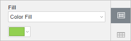
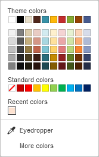
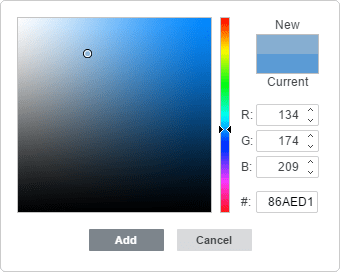
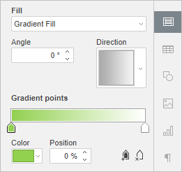
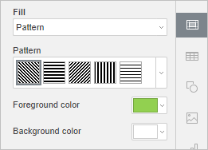
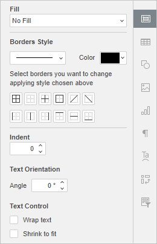

Dodavanje pozadine i ivica ćelija
Dodavanje pozadine ćelije
Da biste primenili i formatirali pozadinu ćelije u Spreadsheet Editor-u,
-
izaberite ćeliju ili opseg ćelija pomoću miša ili ceo radni list pritiskom na kombinaciju tastera Ctrl+A,
Napomena: takođe možete izabrati više nepovezanih ćelija ili opsega ćelija držeći taster Ctrl dok birate ćelije/opsege mišem.
- da biste primenili popunu jednobojnom bojom na pozadinu ćelije, kliknite na ikonu Boja pozadine na kartici Home na gornjoj traci sa alatkama i izaberite željenu boju.
- da biste koristili druge tipove popune, kao što su gradijent ili šablon, kliknite na ikonu Podešavanja ćelije na desnoj bočnoj traci i koristite odeljak Fill:
-
Color Fill – izaberite ovu opciju da biste naveli jednobojnu boju kojom želite da popunite izabrane ćelije.

Kliknite na obojeno polje ispod i izaberite jednu od sledećih paleta:

- Theme Colors – boje koje odgovaraju izabranoj šemi boja tabele.
- Standard Colors – skup podrazumevanih boja. Izabrana šema boja ne utiče na njih.
-
Takođe možete primeniti prilagođenu boju koristeći dve različite opcije:
- Eyedropper – koristite ovu opciju da biste izabrali željenu boju klikom na nju u tabeli.
-
More colors – kliknite na ovaj natpis ako željena boja nedostaje među dostupnim paletama. Izaberite potreban opseg boja pomeranjem vertikalnog klizača i podesite konkretnu boju povlačenjem birača boje unutar velikog kvadratnog polja. Kada izaberete boju pomoću birača, odgovarajuće RGB i sRGB vrednosti boje biće prikazane u poljima sa desne strane. Takođe možete definisati boju na osnovu RGB modela boja unošenjem odgovarajućih numeričkih vrednosti u polja R, G, B (crvena, zelena, plava) ili unosom sRGB heksadecimalnog koda u polje označeno znakom #. Izabrana boja se pojavljuje u okviru New za pregled. Ako je objekat prethodno bio popunjen nekom prilagođenom bojom, ta boja se prikazuje u okviru Current kako biste mogli da uporedite originalnu i izmenjenu boju. Kada je boja definisana, kliknite na dugme Add:

Prilagođena boja će biti primenjena na izabrani element i dodata u paletu Recent colors.
-
Gradient Fill – popunite izabrane ćelije sa dve boje koje se glatko prelaze jedna u drugu.

- Angle – ručno navedite tačnu vrednost u stepenima koja definiše smer gradijenta (boje se menjaju u pravoj liniji pod navedenim uglom).
- Direction – izaberite unapred definisan šablon iz menija. Dostupni su sledeći smerovi: gore-levo ka dole-desno (45°), gore ka dole (90°), gore-desno ka dole-levo (135°), desno ka levo (180°), dole-desno ka gore-levo (225°), dole ka gore (270°), dole-levo ka gore-desno (315°), levo ka desno (0°).
-
Gradient Point je specifična tačka za prelaz iz jedne boje u drugu.
- Koristite dugme Add Gradient Point ili klizač da biste dodali gradijentnu tačku. Možete dodati do 10 gradijentnih tačaka. Svaka sledeća dodata tačka neće uticati na trenutni izgled gradijentne popune. Koristite dugme Remove Gradient Point da biste obrisali određenu gradijentnu tačku.
- Koristite klizač da biste promenili poziciju gradijentne tačke ili navedite Position u procentima za precizno pozicioniranje.
- Da biste primenili boju na gradijentnu tačku, kliknite na tačku na klizaču, a zatim kliknite na Color da biste izabrali željenu boju.
-
Pattern – izaberite ovu opciju da biste popunili izabrane ćelije dvobojnim dizajnom sastavljenim od pravilno ponavljanih elemenata.

- Pattern – izaberite jedan od unapred definisanih dizajna iz menija.
- Foreground color – kliknite na ovo polje boje da biste promenili boju elemenata šablona.
- Background color – kliknite na ovo polje boje da biste promenili boju pozadine šablona.
- No Fill – izaberite ovu opciju ako ne želite da koristite popunu.
-
Color Fill – izaberite ovu opciju da biste naveli jednobojnu boju kojom želite da popunite izabrane ćelije.
Dodavanje ivica ćelija
Da biste dodali i formatirali ivice na radnom listu,
- izaberite ćeliju, opseg ćelija pomoću miša ili ceo radni list pritiskom na kombinaciju tastera Ctrl+A,
Napomena: takođe možete izabrati više nepovezanih ćelija ili opsega ćelija držeći taster Ctrl dok birate ćelije/opsege mišem.
- kliknite na ikonu Ivica na kartici Home na gornjoj traci sa alatkama ili kliknite na ikonu Podešavanja ćelije na desnoj bočnoj traci i koristite odeljak Borders Style,

- izaberite stil ivica koji želite da primenite:
- otvorite podmeni Border Style i izaberite jednu od dostupnih opcija,
- otvorite podmeni ikone Border Color ili koristite paletu Color na desnoj bočnoj traci i izaberite željenu boju iz palete,
- izaberite jedan od dostupnih šablona ivica: Outside Borders , All Borders , Top Borders , Bottom Borders , Left Borders , Right Borders , No Borders , Inside Borders , Inside Vertical Borders , Inside Horizontal Borders , Diagonal Up Border , Diagonal Down Border .